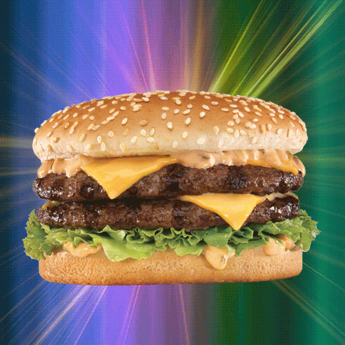

Hamburger Recipe

Description
A burger is a savory sandwich with a grilled beef patty, fresh lettuce, tomatoes, cheese, and condiments,
all nestled between toasted buns.
Ingredients
- Beef patty (or alternative patty)
- Lettuce
- Tomato slices
- Cheese
- Pickles (Optional)
- Onion (Optional)
- Ketchup
- Mustard
- Mayonnaise
- Toasted buns
Preparation
- Prepare the ingredients: Wash and slice the lettuce, tomatoes, onions, and pickles.
- Season the patty: Add salt, pepper, and any desired spices to the beef patty.
- Cook the patty: Grill or pan-fry the patty for 3-4 minutes per side or until fully cooked. Add cheese on top to melt.
- Toast the buns: Lightly toast the buns on the grill or in a pan.
- Assemble the burger: Spread condiments on the buns, then layer with lettuce, tomato, the cooked patty, and additional toppings like onions or pickles.
- Serve: Close the burger with the top bun ans enjoy!.